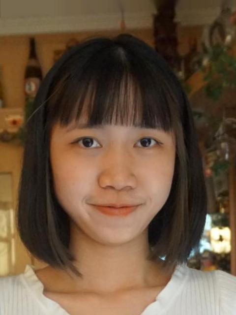
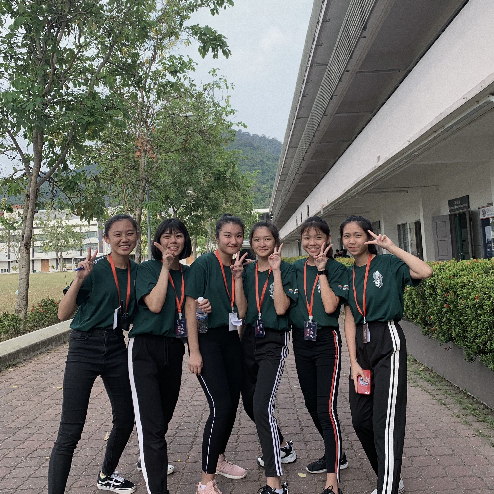
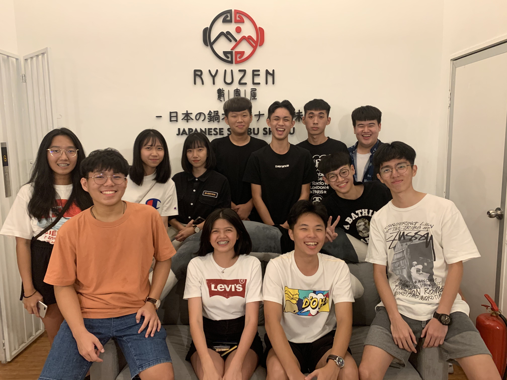
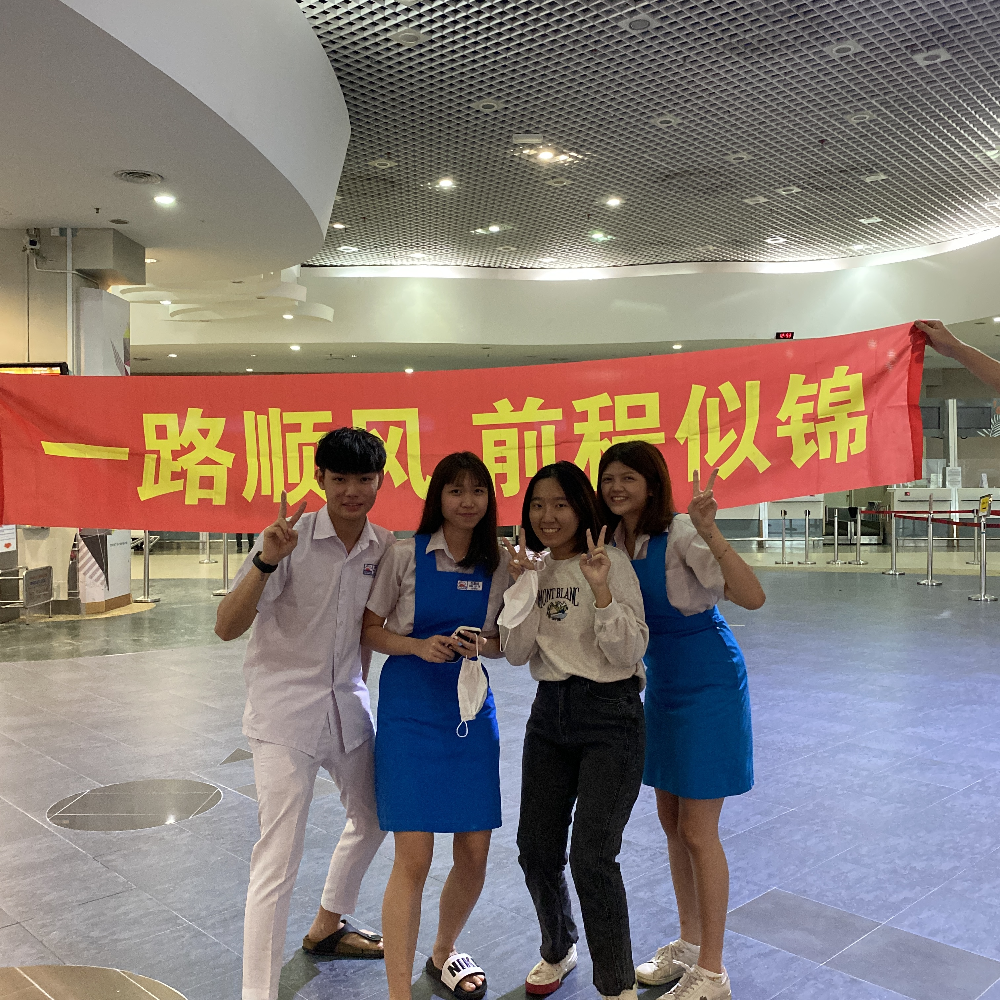

| Info. |
Sim Zi Qi | 沈紫琪
2002.9.18 // Virgo
Information Management
Malaysia
| Skills |
- HTML
70%
- HTML
85%
- JAVA Script
72%
- Word
86%
- Canva
95%
- Excel
70%
| Experience |
2019
高二升高三那年假期，因為無聊找了一家餐廳打工，也是人生中的第一份工作。拿到第一份薪水的感覺也不同，也為自己賺來的錢買了一個🎁。
2020
高三畢業後也去了一家幼兒園當了老師，一開始以為教小孩子的工作很簡單，沒想到當幼教原來是多麼辛苦，小孩很可愛但也是小惡魔，不過我也從中學習了很多。
2021
到大學後在學校找了份工讀，幫忙校友更新個人資料，製作卡片等等。由於需要幫助校友處理各種煩瑣的問題，所以也鍛鍊了不少應變能力及臨場反應。
2022
寒假的時候，剛好聽說工廠兼職可以賺外快，就到工廠裡去兼職，才體驗到工作內容如同機器人一樣每天工作12小時，內容重複乏味，但一整天下來會感覺很充實。
2022
在大學上學期間，我也在一家餐廳兼職，幫忙備料，服務客人，原本完全不會下廚的我，也學會了不少料理知識。

----Family----
2021還記每年新年，我們家都會拍一張全家福，這張照片也已經是一年前了，
那時候很幸福很快樂，家人在身邊，朋友在身邊，大家一起吃火鍋，拿紅包，去拜年。
有說有笑，不知不覺我也已經一年沒回家了，好想念我的家人，也好想家。

----Activity----
2019這是我在升高二時參加的活動，也是我參加過最有意義的活動。
大家一起認真策劃活動的流程，細節。就為了讓整個活動順利舉辦，整整三天都睡不到三小時，
雖然過程很累，但最後看到學員參加的開心，我也很開心自己能夠參與。

----S3C4----
2020這是高中的班聚，老師帶我們去吃烤肉！也是我們唯一一次，哈哈哈。
那個時候的我們，每天去學校不是吃飯就是睡覺（他們罷了我沒有），什麼都不用顧慮，真的很快樂。
看到現在大家為了自己的前途在努力，也㊗️大家一帆風順。

----Friend----
2022年要出國留學前的照片，我們一起穿上校服送機，真的很丟臉，還準備了布條歡送～
如今大家各奔東西，再也沒有機會可以一起瘋，畢業是終點也是起點，我們都將奔赴不同的人生。
願我們在彼此看不見的世界裡熠熠生輝，頂峰中相見。